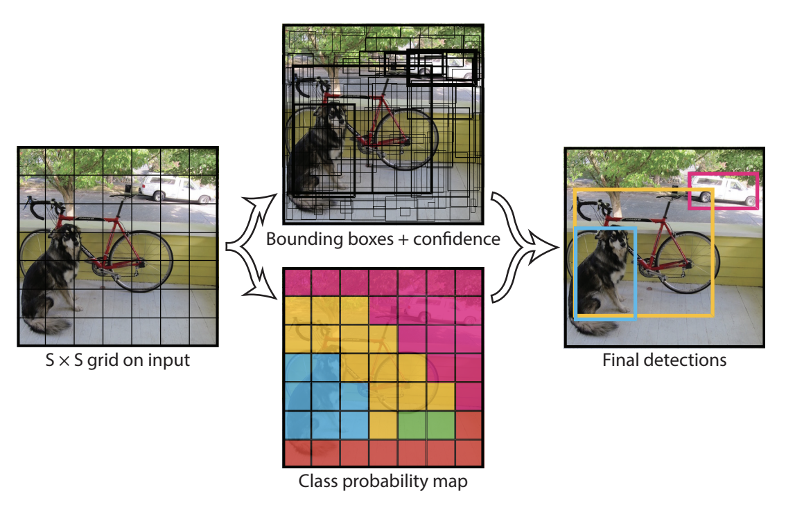

YOLO en detalle#
En este cuaderno, exploraremos en detalle el funcionamiento del modelo YOLO.
Detección de objetos#
Historia de la detección de objetos#
Poco después de la publicación del famoso artículo que popularizó el deep learning, los investigadores en procesamiento de imágenes comenzaron a desarrollar modelos de deep learning.
Como se explicó en el cuaderno anterior, existen tres grandes categorías de algoritmos de procesamiento de imágenes: clasificación, detección y segmentación.
La clasificación es relativamente sencilla de implementar con un modelo de deep learning profundo, siempre que se cuente con los recursos necesarios. Sin embargo, la detección requiere más ingenio.
En 2014, un grupo de investigadores propuso el artículo Rich feature hierarchies for accurate object detection and semantic segmentation, más conocido como R-CNN. Este artículo, muy influyente, introdujo una arquitectura de dos etapas para la detección de objetos y ofreció un rendimiento notable. El principal problema de este enfoque es su tiempo de procesamiento demasiado lento, que no permite una detección en tiempo real. Numerosas técnicas intentaron resolver este problema proponiendo arquitecturas diferentes, como fast R-CNN, faster R-CNN y mask R-CNN. Estos métodos mejoran significativamente el R-CNN básico, pero no son suficientes para lograr una detección en tiempo real en la mayoría de los casos.
En 2015, un artículo provocó un cambio radical en el campo de la detección de objetos. Este artículo es You Only Look Once: Unified, Real-Time Object Detection.
You Only Look Once (YOLO)#
Los enfoques anteriores utilizaban una propuesta de regiones seguida de una clasificación. En otras palabras, explotaban clasificadores potentes para la detección de objetos.
El artículo You Only Look Once (YOLO) propone predecir las bounding boxes y las probabilidades de pertenencia a una clase directamente mediante una única red neuronal. Esta arquitectura es mucho más rápida y permite alcanzar velocidades de procesamiento de hasta 45 imágenes por segundo.
¡Es una revolución en el campo de la detección de objetos!
Pero, ¿cómo funciona?
YOLO: ¿Cómo funciona?#
Esta sección describe la arquitectura de YOLO inspirándose en este artículo del blog. Se recomienda su lectura. Las imágenes utilizadas provienen del artículo del blog o del documento original.
División en cuadrícula#
El principio básico de YOLO es dividir la imagen en partes más pequeñas mediante una cuadrícula de dimensión \(S \times S\), como se muestra a continuación:
La celda que contiene el centro de un objeto (por ejemplo, un perro o una bicicleta) es responsable de su detección (para el cálculo de la función de loss). Cada celda de la cuadrícula predice \(B\) bounding boxes (configurable, 2 en el artículo original) y una puntuación de confianza para cada una. La bounding box predicha contiene los valores \(x, y, w, h, c\), donde \((x, y)\) es la posición del centro en la cuadrícula, \((w, h)\) son las dimensiones de la caja en porcentaje de la imagen completa y \(c\) es la confianza del modelo (probabilidad).
Para calcular la precisión de nuestra bounding box durante el entrenamiento (componente de la función de loss), se utiliza la métrica intersection over union (IoU), definida como:
\(\frac{pred_{box}\cap label_{box}}{pred_{box} \cup label_{box}}\)

Además de predecir la bounding box y la confianza, cada celda también predice la clase del objeto. Esta clase está representada por un vector one-hot (que contiene solo ceros, excepto un 1 en la clase correcta) en las anotaciones. Es importante señalar que cada celda puede predecir varias bounding boxes, pero solo una clase. Esta es una de las limitaciones del algoritmo: si varios objetos están en la misma celda, el modelo no podrá predecirlos correctamente.
Ahora que tenemos toda la información, podemos calcular la dimensión de salida de la red. Tenemos \(S \times S\) celdas, cada celda predice \(B\) bounding boxes y \(C\) probabilidades (donde \(C\) es el número de clases).
Por lo tanto, la predicción del modelo tiene una dimensión de: \(S \times S \times (C + B \times 5)\).
Esto nos lleva a la siguiente figura:

La figura de arriba en el centro muestra las bounding boxes predichas por el modelo (aquellas con un borde más grueso tienen puntuaciones de confianza altas). La figura de abajo en el centro muestra la clase predicha en cada celda (en azul la clase perro, en amarillo la clase bicicleta y en rosa la clase coche).
Arquitectura del modelo#
La arquitectura del modelo YOLO, en términos de disposición de las capas, también es particular. Se compone de tres componentes principales: head, neck y backbone.
Backbone: Es la parte más importante de la red, compuesta por una serie de convoluciones para detectar las características más importantes. Esta parte suele estar preentrenada en un conjunto de datos de clasificación.
Neck y Head: Estas capas procesan la salida de las capas convolucionales para producir una predicción de tamaño \(S \times S \times (C + B \times 5)\).
En el artículo original de YOLO, la cuadrícula tiene un tamaño de 7x7, hay 20 clases (Pascal VOC) y se predicen dos bounding boxes por celda. Esto da una predicción de tamaño:
\(7 \times 7 \times (20 + 2 \times 5) = 1470\)
Entrenamiento del modelo#
Los valores de entrenamiento del modelo (tamaño de imagen, epochs, número de capas, batch_size, etc.) se detallan en el artículo original y no entraremos en detalles aquí.
Sin embargo, es interesante profundizar un poco en la función de loss. La idea lógica básica sería utilizar simplemente la función de loss MSE entre nuestras predicciones y las etiquetas. Sin embargo, esto no funciona directamente porque el modelo daría la misma importancia a la calidad de la localización y a la precisión de la predicción. En la práctica, se utiliza una ponderación en las funciones de loss \(\lambda_{coord}\) y \(\lambda_{noobj}\). Los valores del artículo original se establecen en 5 para \(\lambda_{coord}\) y 0.5 para \(\lambda_{noobj}\). Cabe señalar que \(\lambda_{noobj}\) se utiliza solo en las celdas donde no hay objetos para evitar que su puntuación de confianza, cercana a 0, afecte demasiado a las celdas que contienen objetos.
Limitaciones de YOLO#
Ya hemos mencionado su principal limitación: solo predecir un número limitado de bounding boxes por celda y no permitir la detección de objetos de diferentes categorías en la misma celda. Esto plantea problemas cuando se desea detectar personas en una multitud, por ejemplo.
Mejoras de YOLO#
Hemos visto que YOLO es un modelo muy eficiente y rápido para la detección de objetos en imágenes. Por esta razón, muchos investigadores han buscado mejorarlo proponiendo diversas optimizaciones. Incluso hoy en día, nuevas versiones de YOLO se lanzan regularmente.
Esta sección presenta cronológicamente las diferentes versiones de YOLO.
YOLOv2 (2017) - también conocido como YOLO9000#
Artículo: YOLO9000: Better, Faster, Stronger
Innovaciones:
Introducción de la idea de anchors (anclas) para mejorar la precisión de las predicciones de las cajas.
Cambio de la resolución de entrada de 224x224 a 416x416 para mejorar la detección de objetos pequeños.
YOLOv3 (2018)#
Artículo: YOLOv3: An Incremental Improvement
Innovaciones:
Uso de un modelo más profundo con una arquitectura Darknet-53, una red neuronal convolucional residual.
Detección multiescala, con predicciones realizadas en tres niveles de granularidad diferentes (feature maps de distintos tamaños).
YOLOv4 (2020)#
Artículo: YOLOv4: Optimal Speed and Accuracy of Object Detection
Innovaciones:
Uso del backbone CSPDarknet53 para un mejor rendimiento.
Mejoras en las cabezas de detección con PANet (Path Aggregation Network) para optimizar los flujos de información.
Introducción del concepto de Mosaic Data Augmentation para enriquecer la diversidad de los datos de entrenamiento.
Adición de diversas técnicas modernas como DropBlock, activación Mish y SPP (Spatial Pyramid Pooling).
YOLOv5 (2020)#
Desarrollado por Ultralytics
Innovaciones:
Sin artículo oficial, pero con mejoras prácticas en la implementación y el rendimiento.
Modelo más ligero y más fácil de entrenar con una mejor gestión de las dependencias.
YOLOv6 (2022)#
Innovaciones:
Nuevo backbone YOLOv6S, optimizado para el rendimiento en tiempo real.
Técnicas avanzadas de reducción de latencia.
Mejoras en los métodos de aumento de datos y optimización de hiperparámetros.
YOLOv7 (2022)#
Artículo: YOLOv7: Trainable bag-of-freebies sets new state-of-the-art for real-time object detectors
Innovaciones:
Integración de bag of freebies para mejorar la precisión sin aumentar el tiempo de inferencia.
Arquitectura optimizada para un equilibrio óptimo entre velocidad y precisión.
Adición de diversas técnicas de regularización para mejorar el rendimiento general.
YOLOv8 (2023)#
Desarrollado por Ultralytics
Innovaciones:
Aún más optimizado para el rendimiento en tiempo real y la integración móvil.
Arquitectura flexible que permite ajustes para diversos casos de uso, incluyendo detección, segmentación y clasificación.
YOLO-World (2024)#
Artículo: YOLO-World: Real-Time Open-Vocabulary Object Detection
Innovaciones:
Uso de un transformer encoder para texto que permite la detección de vocabulario abierto.